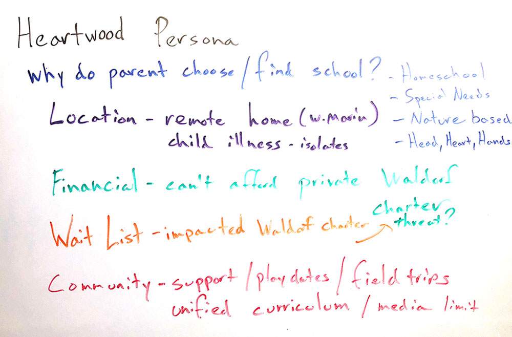
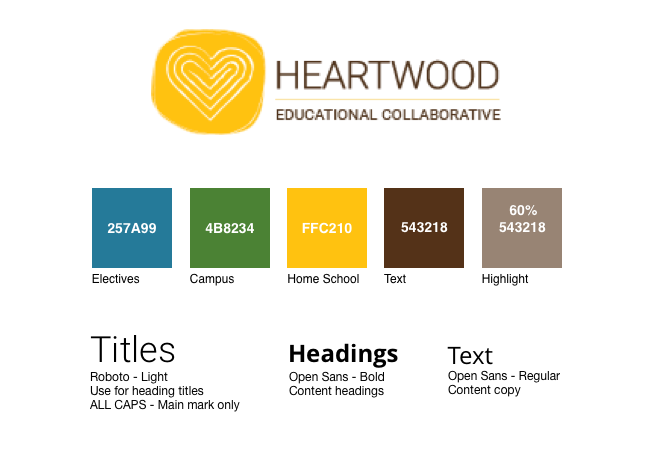
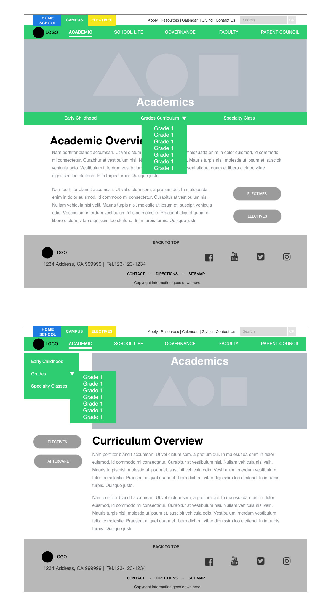
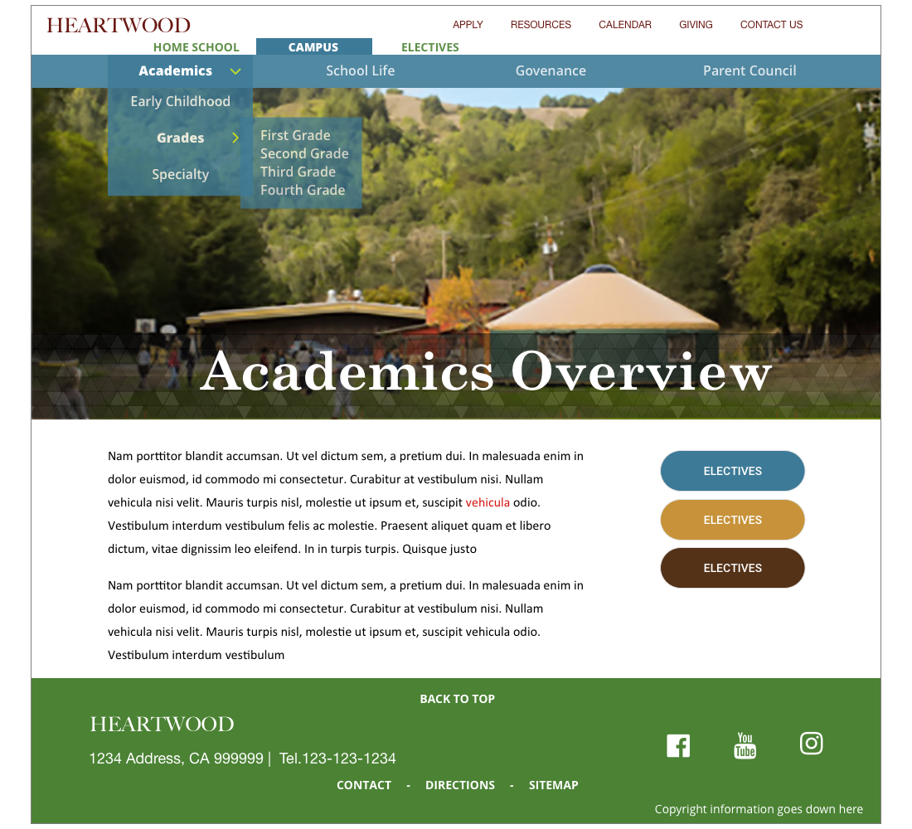
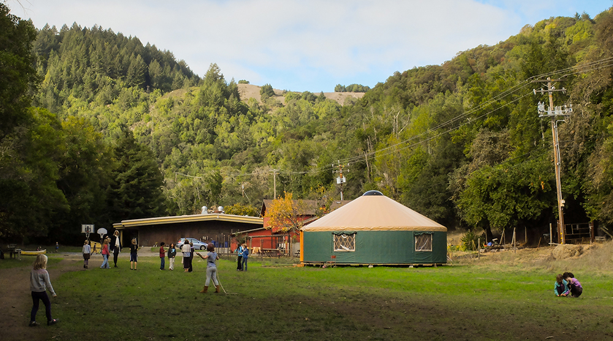
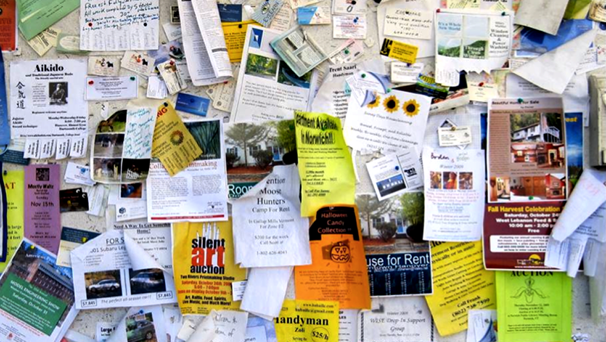
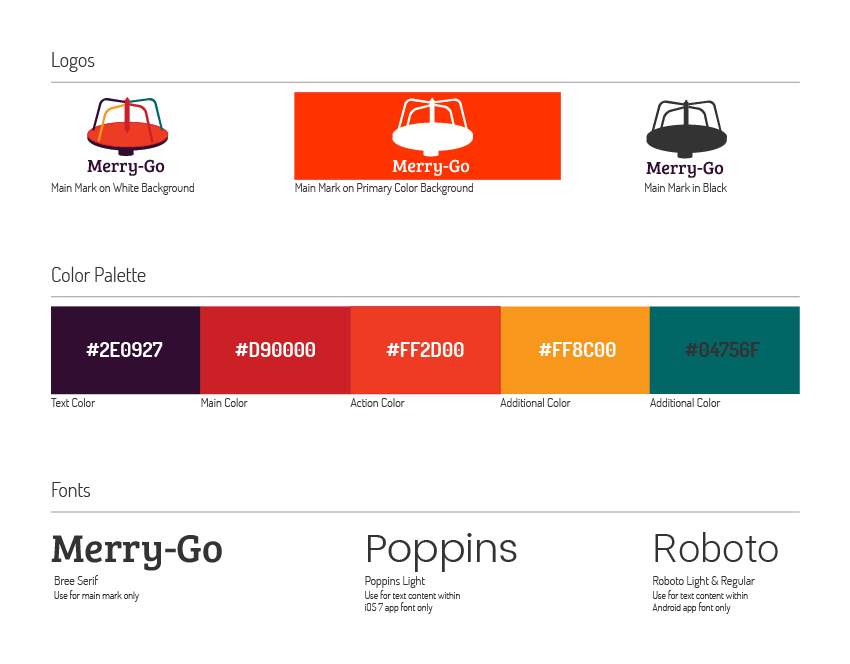
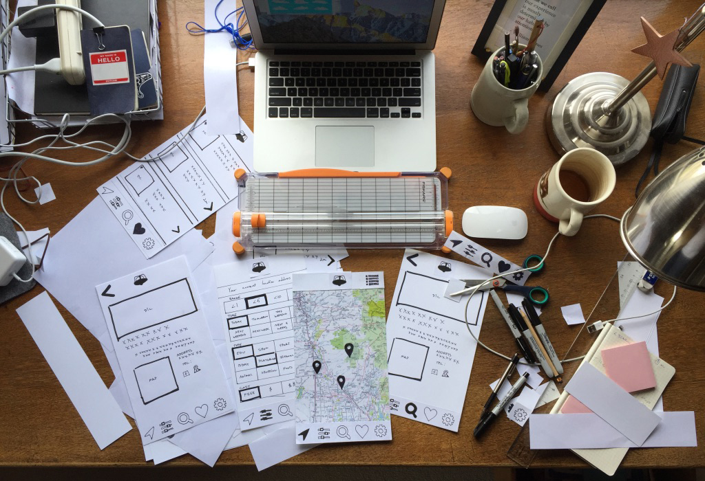

Welcome, I'm Douglas a UX designer based in the North Bay (San Francisco Bay Area). I'm interested in you, the visitor. I enjoy creating experiences and telling stories that captivate, connect and improve your life.
Punch line
Punch Line is a mobile game that transforms telling jokes into a competitive sport. Get strangers laughing and they are no longer strangers. Boxers earn points and collect jokes simply by playing. Write a good joke and others will share it, while you earn points.
Case Study: PUNCH LINE
Get strangers laughing and they are no longer strangers
Punch Line is a mobile game that connects people with humor. Hear the laughter of a nearby stranger that you just threw a punch line at. Tell jokes at a party without taking the stage and have a collection of all the jokes you ever heard and never could remember.
Discovery
Game Design
I was traveling on a train when another commuter suddenly bursts out laughing. Several people looked up with a grin at the laughing commuter and then went back to their screens. From my observation most commuters were using their smart phones doing one of three things: texting, gaming or reading/scrolling content. I wondered how a mobile chat game could connect all those commuters with laughter.
From this I derived a simple game of humor tag. A player sends a joke to a stranger or friend without the punch line. If the receiver wants to know the punch line they must send a joke back to reveal the complete joke. All jokes received would go into a player's database so that they could be retold again. Players can write jokes and share them. Users can set filters on the type of humor they want. This simple idea became the impulse for building Punch Line.
RESEARCH

Who is a gamer? Why do we play mobile games? What games do we play? To answer these questions I created a survey and posted it on Reddit and interviewed five self identifying gamers. Here is what I learned:
MOTIVATIONS
FRUSTRATIONS
CONSIDERATIONS
ANALYSIS
User Interface Map

On-Boarding Flow

With my research outlining the user objectives, I compiled a giant list of user tasks (user story) and chunked the tasks into screen inventory to form a fundamental user flow. Starting with a sketch of the on-boarding flow.
SCREEN INVENTORY
1. On-boarding -> 2. Inbox/Home -> 3. Joke Database -> 4. Joke Writing -> 5. User Settings -> 6. User Match -> 7. Joke Market
Then, I returned to the user story and ranked the tasks into "must haves" and identified five foundational functions needed on each screen. This feature prioritization became the user interface map for the app.
FEATURE PRIORITIZATION
1. Search | 2. Edit Screen | 3. Setting | 4. Find Player | 5. Joke Writing
Design
With a clear picture of the project's information architecture. I created a site map and flow chart from my notes and drawings to crystalize my findings.
Brand
Color & Typography

The language of comedy has a violent vocabulary. You throw punch lines; you kill the audience, you bombed, slap stick, etc. The simple act of telling jokes is both exhilarating and brutal if met with dramatic silence. For these reasons, the game’s look and feel is based on the display iconography of boxing posters linking laughter with the excitement of the big fight.
The basic color scheme of black red and yellow blatantly mimics the easily recognizable propaganda style found in the boxing posters. The logo font of Fjalla with its lean and mean stature and tall and sharp san serif corners says authority. While the solid and strong Future Condensed font states it purpose clearly in headings. Last by not least Avenir easy and crisply communicates any text content.
The logo was discovered when searching for icons while building an early prototype. I noticed how the each boxing glove icon contained a whimsical smile all I had to do was give that smile two black eyes.
PROTOTYPE
I was anxious to translate my notes and research into a working prototype so I could begin testing and refining the app. I built and tested numerous Sketch prototypes using INvision. I transformed barebones sketches into a clickable prototype through rounds of exploring visual design, conducting usability testing, and iterating on user feedback. I also developed an on boarding tutorial that outlined a 3 step process to easy game play.
USER TESTING
My first low fidelity prototype focused primarily on the mechanics of game play. I tried a swiping gesture which mimicked throwing a punch and content drawers because they worked well to accommodated small screens.
READY - INBOX
Inbox of new jokes (in red) are choosen to respond or block.
AIM - SEARCH/SORT
The user swipes left to reveal their joke database to choose a joke. Swiping left again reveals the database filter.
FIRE - SEND
The user chooses a joke and taps it to send the joke.
I built an inital prototype and conducted three user tests that were done over the phone and using live share with Invision. From my testing I learned that UI patterns using swiping gesture and drawers were associated with browsing content. User wanted a simple large button to send jokes not a gesture and were overwhelmed with an inbox of jokes. Most users wanted a one on one chat like boxing match. The most valued functions were searching and writing jokes and finding opponents.
Next, I tested a new prototype with three new users and the first three users. In this prototype, I fundamentally changed the UI by dividing the screen into two parts where each boxer takes a corner. The player avatar in the upper right corner and the opponent in the lower left. The top screen displayed the joke database with search/sort and writing (+) functions. The bottom screen the list of matches (inbox) and boxing ring (chat arena) with a large VS. button for starting a new fights. From my second round of testing I learned that new players wanted to quickly begin playing and so I included two complimentary jokes to facilitate engagement and introduce users to how the game is scored.
High Fidelity Prototype
From my user testing, I learned that thumbs are the masters of the game universe. So I accommodated those thumb wars and turned the screen horizontal. I also learned swiping is associated with browsing so in this version the user sorts and searches jokes by swiping.
The duality of the split screen was way to confusing of users. So instead of reinventing the wheel, I adopted the standard UI patterns for chat apps and how users send a gifs or emoji.
My study of gamification techniques greatly influenced this prototype. A more prominent score, leader boards, 12 round matches and time limits that influence scoring. Incentivizing starting fight by giving a point advantage. Overall, I focused on making the game fun and competitive without to many rules.
Key Learnings
Thumbs Rule
Punch Line is a humorous thumb war. Turning the screen to accommodate the users thumbs made all the difference in creating a intuitive and fun gaming experience. Learning about gamification and the gamer psychology was fascinating. I also really enjoyed the passion of the "gamers" I interviewed and who tested my prototype.
Translating the idea of the game into a clear user interface was challenging. Done in solitude it felt like untangling a web. But with patience and applying the design thinking process (Empathize – Define – Ideate – Prototype - Test – Implement) I soon got a clear picture of the UI, and once I could see it, I could make it. Because my first profession was graphic design, my largest lesson was staying low fidelity for as long as possible. Design is a waist of time at the wire frame and lo fidelity level. Now I know!
User testing involves one of my favorite things, asking questions. And the insights from user testing were no less than revolutionary in clarifying user patterns and orienting the game. Through out this project, I have been amazed at the amount of enthusiasm Punch Line has inspired in others. After posting this project on Slack, I received lots of positive feed back and recently have been working with developers on building a working actionable game! I am very excited and look forward to sharing this once it is finished.
Heartwood
Heartwood Educational Collaborative an independent study and home school program needed a dramatic remake of their website under an impossible deadline.
Case Study: HEARTWOOD
A Waldorf Inspired Educational Collaborative
Heartwood Educational Collaborative is an independent study and home school program guided by Waldorf teaching methods, situated in a natural environment where a robust nature enriched curriculum helps students find their own learning rhythm.
Discovery
Yurt Classroom
Heartwood Educational Collaborative provides several inspired, Waldorf Education tailored programs and resources to meet the developmental needs of students who are homeschooled or campus attendees. Under new leadership the school needed a remake of their website within a month. The majority of the research was captured over two meeting with the stakeholders and summarized in a project brief. Though this was not optimal for collecting a broad picture of the school’s clients it quickly became apparent that the highly specialized niche that Waldorf homeschools occupy in the San Francisco Bay Area bought a ready audience and simplified the goals of the site. The client provided a mood board, a sitemap and a Dropbox full of images.
RESEARCH
Persona Drivers
From an impromptu questionnaire of current school parents and analyzing the reoccurring circumstances of those families revealed four major drivers for enrollment.
USER MOTIVATIONS
Review of the websites tasks with Google analytics and feedback from the office staff about callers who had visited the website showed the importance of free quality resource and blog articles driving conversion. It also revealed that the current admission process was not clear. Futher discussion about the mission and history of the school assisted the rebranding of the school and revealed a competitive advantage created by impacted enrollment at other local charter schools.
SITE TASKS
PROBLEM
It became obvious after out initial meeting that the client’s vision of the project scope was too large for the current deadline and budget.
SOLUTION
Using the data from the project brief we narrowed the functionality of the website into a list of “must haves” and aligned current functionality into a minimum viable product. The new project scope incorporated consolidating the calendar, linking to existing online donation methods and simplifying the online application form.
design
Site Map
PROBLEM
The current site map did not provide consistent site hierarchy as characterized by the goals outlined in the project brief. In addition, the site page outline had vital information buried, and a lack of clear information architecture.
SOLUTION
Working with the school administrator, we edited the site map and consolidated content to meet the end goals of different users. By identifying the end goals of the users, a vital missing part of the initial persona sketches, the content structure and site navigation changed entirely. The site was divided up into three distinct content driven sections.
Brand
Style Tile
From the onset of this project the stakeholders had a clear vision of their brand story and mission. "Nature based" and "Waldorf" were clear describers in almost every conversation I had with them. They were so invested in their vision of the school that they insisted on designing the logo and renaming the school. Because the color scheme and font was foundational to the website navigation system, I was tasked in creating a color palettes and font usage that reflected the schools brand. The challenge was doing this before the logo or name of the school was established.
TYPOGRAPHY
From my conversations with the new administrator, I knew that the Germanic, wood block type fonts used in many “Waldorf” schools was something to avoid. The intention was to bring something natural, modern and open to the homeschooling movement. I immediately began looking to san serif fonts to reflect this modern educational ethos. Early in my research the Open Sans font became the obvious choice for the school. It was open and easy to read font that seemed to reflect the lyrical praise every stakeholder had for the school.
COLOR PALETTE
I began with a mood board to compile the examples and key word images that had been discussed by the client. Ultimately, I came up with three-color palates examples that had the proper contrast and readability for the navigation and met with the client’s approval. .
wireframe
Campus Pages
Persona Drivers

With a concise site map, I went to work on building three low-fi wireframes. Before diving in, I researched common UI pattern and noted the nomenclature and navigation hierarchy on private school websites. I noted the kind and relative priorities of the information and functionality displayed. I also compiled a list of rules for displaying this information and the effect of different scenarios on this display.
Prototype
Design Exploration B

Design Exploration A
The wire frames were present to the client and the site navigation was established. With this information in hand I created a high fidelity wireframe sample to clarify some of the visual hierarchies and content placement discuss in our meeting.
Key Learnings
Heartwood Campus
When things are under a tight deadline so often the research phase of a project is often where clients will push to cut corners. I believe this tendency is born out of a client’s laser like focus on brand story and content, which eclipses the marketing and user experience context of their product. This project bears testament to this tendency and is reflected in the challenges of defining project scope and a clear site map. It is precisely this translation of idea into outline that a UX designer is hired.

MERRY GO
Merry Go is a mobile app that finds todays kid friendly event and venues. Allows the user to filter, search share events and connect with others attending the event through users posts and comments.
Case Study: Merry Go

Overtired and isolated parents need to find a recommended kid friendly event. TODAY!
Merry Go is a mobile app that connect parents in their search for today's kid friendly event and venues. It allows users to filter, search, and share events while participating in a live forum about the event.
Discovery
answers found here
Being a parent to young children is an exhausting and isolating endeavor. Finding a fun child focused activity is only a web search away. But how do you find recommended local kid friendly event and venues? The challenge is more than finding a destination it’s about answering parenting questions;
- Do they have changing tables?
- Is the performance during nap-time?
- Can I use my stroller?
- Is there shade?
- Is there healthy food and drinks available?
RESEARCH
SURVEY
I created a survey asking caregivers about the methods and resources they use to find local kid friendly events. I posted a link to the survey on a mother club online discussion forum and received 19 respondents. I also interviewed five survey respondents to clarify their answers and outlined their pain points when looking for kid friendly events.
PERSONA
I conducted five impromptu interviews of caregivers at two local park playgrounds. I asked them about what resources they used to find local kid friendly events. I was shocked to discover that these caregivers relied on the bulletin board at a nearby cafés and the fellow playground caregivers for finding recommended local events. In addition, I also closely reviewed the survey respondent data, followed the Southern Marin Mothers list serve for a week and generally explored online parenting blogs. From this research, I created four user personas.
ANALYSIS
look here
COMPETITIVE ANALYSIS
The resources available for finding kid friendly event and activities are vast. From my survey data, interviews with parents and resource landscape examination, I created a basic SWOT analysis. My take away from my research was that people want context and personal connections from their content, especially recommendations and real-time feedback.
DESIGN
Next, I compiled a user story and prioritized the essential functionality for a minimum viable product. It was during this process that I made a fatal flaw and overlooked my user research. The social interactions like sharing, linking, posting & comments were precisely the functions most wanted by most users. This fact would be revealed during user testing.
To design the dashboard, I did some UI pattern research and mapped out the sign-up and search flows using my user story as a guide. Then, I built the site map to help clarify the navigation structure and content hierarchy.
Brand
lStyle Guide
LOGO
First I made a list of words that described the app and then circled the top three. They were kids, fun, and movement. Then I searched for imagery around places where kids activities typically happen like playgrounds, circus tents, etc. This was good start but when creating a brand I often work a Socratic method to clarify the foundational elements behind the brand story.
Here is what a working Q and A looked like:
Q: What is this apps primary function?
A: Discovery of new, entertaining events to take my children too. From this answer I derived the tagline: “Let’s find some fun!”
Q: What is fun for both kids and parents?
A: Play
Q: Where do most children find play?
A: At a playground.
Q: What is foundational for discovering new places?
A: Movement
Q: What playground activity is iconic for movement?
A:The Merry- Go - Round and Swings
So the Merry–Go–Round became the name and brand icon because it signified both movement and play. Then, I shorted name to Merry-Go to further emphasize fun and movement.
COLORS
Searching key color indicators like fun, kids, vibrant, and feminine I found mostly cliché pinks, baby blues and lemon yellows that were either too pastel or over the top neon. I was looking for a more nuanced storyline for the Merry- Go color palate. Then I found these retro circus colors that contained the energetic fire engine reds that said “this is fun” to both adult and child.
TYPOGRAPHY
Appealing or a modern female demographic, I looked for a energetic and charming font that said fun. I found these qualities in the font Bree Serif for the logo. For heading and the body copy I looked for something open, easily readable and san serif. I arrived at the tall and thin Poppins Light for headings and the ubiquitous Roboto for the body copy.
User Testing
Paper Prototype
Using my user story and content search UI patterns, I pasted up a basic paper prototype used this to conduct user tests with neighbors. I also brought it to a local dinner party where it was a big hit and helped me gather five user tests. These tests showed the great need for such a app and that context and opinion of other users was paramount to its success.
After an initial round of testing, I transformed the app into a clickable prototype and applied the brand design. I began testing by employing user testing.com to get feedback from my primary demographic. The feedback was positive, so I continued iterating the prototype building out features like recommendations, rating and user comments within the venue information.
Then I sent the the prototype link to survey respondents and gathered feedback in person and over the phone while they clicked through the prototype. I received lots of data about the UI and what worked or not. Yet, it was the conversations I had after the testing that brought me to a key learning that shifted the whole focus of the project.